Fold or Fail
Predicting Protein Stability Changes from Mutations
We test whether graph neural networks on residue contact graphs improve prediction of mutation-induced protein stability changes beyond strong condition-aware tabular baselines.
From oxygen transport in blood to the signals firing between neurons, every biological process that keeps us alive is carried out by proteins. This complexity arises from just 20 amino acids, chained into sequences that fold into precise three-dimensional structures. Proteins don’t act alone: each one must fit precisely into binding partners, substrates, and signaling networks that depend on its exact shape. A misfolded protein doesn’t just lose its own function; it can disrupt entire biological pathways (Hartl & Hayer-Hartl, 2009; Dobson, 2003).
A single amino acid substitution can propagate effects well beyond the mutation site itself. Predicting the consequences of such mutations, specifically whether a substitution makes a protein more or less thermodynamically stable, is captured by the change in Gibbs free energy, or ΔG. Loosely, free energy measures how strongly a system favors one state over another: a protein with a large negative ΔG strongly prefers to stay folded. ΔΔG then captures how much a mutation shifts that preference, whether the substitution pushed the protein toward (negative) its functional form or away (positive) from it, and by how much (Montanucci et al., 2019).
The space of possible mutations is exponential: every protein, every position, all 19 possible substitutions. Experimentally measuring ΔΔG for even a small fraction of that space is slow, expensive, and largely infeasible at scale. Furthermore, the effect of any given mutation is not determined by the substitution alone; it depends on the surrounding amino acid environment, the local secondary structure, and the global three-dimensional fold of the protein. These properties interact in ways that are not captured by any single feature in isolation. This is precisely the setting where machine learning becomes a necessary tool. The combinatorial space is too large for experimental coverage, and the patterns that govern stability are too high-dimensional for any fixed set of rules to capture. A model that learns those patterns directly from existing experimental data can provide critical insight across the full combinatorial space.
A sequence-only model sees each mutation as a substitution in isolation. It knows what changed, but not where the mutation sits within the folded protein or which residues surround it in space. A protein’s three-dimensional structure places residues that are far apart in sequence into direct contact in space. Those contacts form a network, and a mutation perturbs that network, not just a single node within it. Representing this structure as a graph makes the spatial dependencies around a mutation site explicit and learnable. As our results show, graph topology carries the strongest predictive signal for mutations at buried residues, where the contact network is densest and non-local structural effects are strongest.
Hypothesis
We hypothesize that a Graph Neural Network (GNN) operating on residue contact graphs will outperform a sequence-based baseline on protein-level ΔΔG prediction. Specifically, its predictive advantage will help most when amino acid residues are buried deep within a protein. When a mutation sits within a dense contact network, its thermodynamic effect propagates through many spatial neighbors simultaneously, which is a dependency that a flat feature vector can’t represent. Message-passing over a residue contact graph makes those non-local structural dependencies explicit and learnable. We predict the GNN's advantage will be strongest at buried residues, where contact networks are densest and non-local structural effects are most pronounced. If structural context is the primary bottleneck for generalizing to unseen proteins, the crossover between buried and exposed performance is where it will be visible.
Existing Approaches
Predicting how a mutation affects protein stability has been approached in three ways: energy-based physical models, supervised learning on flat sequence features, and, most recently, structure-aware deep learning.
Early work established that structural context matters for stability prediction, even when models did not use structure directly. Cao et al. (2019) introduced DeepDDG, a neural network architecture trained on more than 5,700 manually curated mutations, finding that solvent accessible surface area (a measure of how buried a residue is within the folded structure) was the single most predictive feature. Nisthal et al. (2019) confirmed this experimentally using a comprehensive single-mutant database for the Gβ1 protein, finding that mutational sensitivity is governed primarily by residue burial. Prediction algorithms consistently performed better on surface positions than on core positions (precisely where the contact network is densest). Taken together, these studies establish that the identity of the substituted amino acids matters less than where in the folded structure the swap occurs, which flat feature vectors cannot represent.
More recent methods have tried to incorporate that structural context directly. RaSP (Blaabjerg et al., 2023) uses a self-supervised 3D convolutional network to encode local atomic environments, then trains a supervised stability predictor on top of those representations. Stability Oracle (Diaz et al., 2024) is a structure-based graph-transformer that incorporates pairwise residue distances and models mutations from a single starting structure, but its architecture mixes structural and sequence signals in ways that are difficult to disentangle. Both outperform flat-feature baselines, confirming that structural information matters. But neither study isolates whether graph topology itself (independent of richer node features) is responsible for the gain. This is the question our project was designed to answer.
Comparing across these methods is further complicated by dataset overlap. Pancotti et al. (2022) showed that published benchmarks in this space are difficult to compare cleanly: many tools were trained or optimized on overlapping datasets, and performance can shift substantially when direct and reverse mutations are evaluated separately. In our own exploratory baseline, we observed this directly, motivating our choice to evaluate on a strict protein-level split, where entire proteins are held out, rather than a per-mutation split that allows the model to see other mutations from the same protein during training.
Our approach differs from RaSP and Stability Oracle in the question we are asking. We construct explicit residue contact graphs and train a GNN whose structural information is encoded in the graph edges, constructed from real PDB or AlphaFold structures where available. This lets us directly ask if graph topology, or the pattern of spatial contacts around a mutation site, carries a predictive signal beyond what richer node-level features alone can provide. Our ablations address this question by systematically varying what structural information the GNN receives: comparing architecture variants that differ in readout strategy and stratifying results by residue burial to isolate where graph topology adds the most signal.
Dataset & Preprocessing
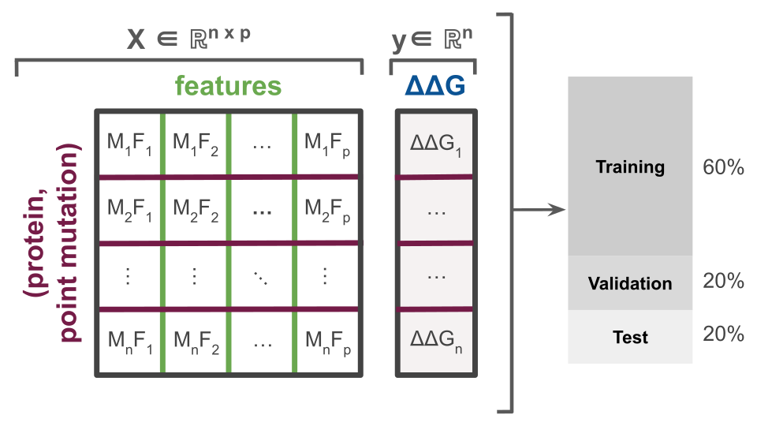
Our dataset is drawn from ProTherm, a curated collection of experimentally measured thermodynamic parameters for protein mutations (Nikam et al., 2021). Each sample in our dataset represents a single (protein, point mutation) pair with a corresponding experimentally measured ΔΔG label, split 60/20/20 into training, validation, and test sets by protein group (Fig. 1).
We worked in two phases. For the XGBoost prototype, we restricted to single-point mutations with UniProt-style annotations, yielding 496 (protein, mutation) pairs across 46 proteins. UniProt records each mutation as [wild-type amino acid][position in chain][mutant amino acid], for example D44N denoting aspartate (D) at position 44 substituted with asparagine (N) (Ahmad et al., 2025). For the full GNN pipeline, we expanded to the complete cleaned dataset: 2,516 mutations across 86 protein groups, split strictly by protein identity to prevent data leakage across train, validation, and test.
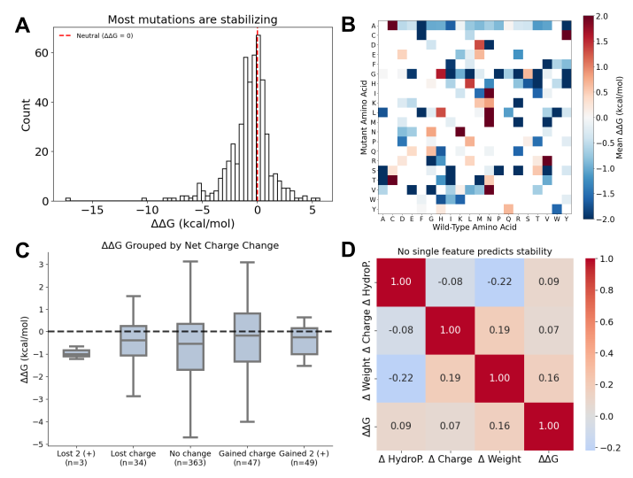
For XGBoost, we used three sequence features: Δ hydrophobicity, Δ net charge, and Δ molecular weight between wild-type and mutant amino acid residues, as well as one-hot encodings of WT/mutant AA identity. None of the flat features predicts ΔΔG reliably in isolation (r < 0.2), and the substitution outcome depends heavily on structural context that flat features cannot encode (Fig. 2).
For the GNN pipeline, each protein is represented as a residue contact graph, with edges drawn between residues whose Cα atoms, the backbone-anchoring carbon atoms, fall within 8.0 Å. Measuring Cα-Cα distances gives a consistent way to define which residues are spatially close across different amino acids. Node features are 34-dimensional vectors encoding amino acid identity and physicochemical properties. Because ProTherm includes proteins with and without resolved structures, we used two graph types: when a PDB or AlphaFold structure was available, edges reflected real 3D spatial contacts; when no structure was available, we used a sequence-neighborhood fallback graph that connects residues by chain order. This allowed us to keep more of the dataset while still tracking what kind of structural information each example contained. Edge features are 11-dimensional: eight features describe the physical distance between the two connected residues by placing that distance into several smooth distance ranges, and three binary flags mark whether the edge comes from sequential adjacency, a real structural contact, or a fallback sequence-neighborhood graph. We used distance-based edge features because two residues being connected is not enough information by itself. A close contact at 4 Å should not be treated the same as a looser contact near the 8 Å cutoff, since tighter contacts are more likely to reflect direct packing interactions.
We evaluate all models using two complementary metrics: Pearson correlation coefficient r, which measures how well predicted ΔΔG values rank mutations relative to one another, and root mean squared error (RMSE) in kcal/mol, which measures absolute prediction error in physical units. Pearson r is the field-standard metric for this task; published tools typically achieve r=0.2–0.5 on held-out test sets (Pancotti et al., 2022). An RMSE of approximately 1.0 kcal/mol represents the practical lower bound given experimental noise in the underlying measurements (Montanucci et al., 2019).
XGBoost Baseline
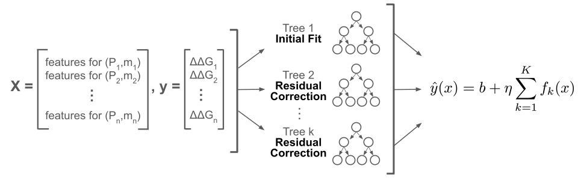
We began with XGBoost on the smaller UniProt-only subset as a controlled environment to understand both the learning problem and how split strategy, discussed by Pancotti et al., affects performance (2022). XGBoost is a collection of shallow decision trees, and was specifically chosen because it efficiently captures nonlinear interactions between flat features without requiring structural information. We thought this would be a meaningful test of how far sequence-level physicochemical features can go (Fig. 3).
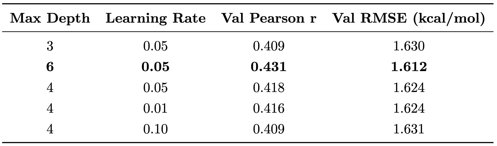
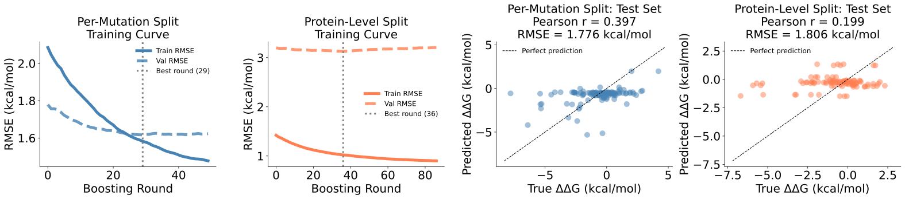
We found that the most important methodological question was not how to implement our model, but how to split our data. A per-mutation split distributes each protein’s mutations proportionally across train, validation, and test, meaning the model sees other mutations from the same proteins during training. A protein-level split holds out entire proteins, requiring the model to generalize to structures it has never seen. Pancotti et al. showed that most published ΔΔG benchmarks are inflated by exactly this kind of within-protein leakage, and we observed it directly as well (2022). The per-mutation split yielded a test Pearson r of 0.417 with clean training convergence, suggesting a well-behaved model, while the protein-level split diverged (Table 1, Fig. 4).
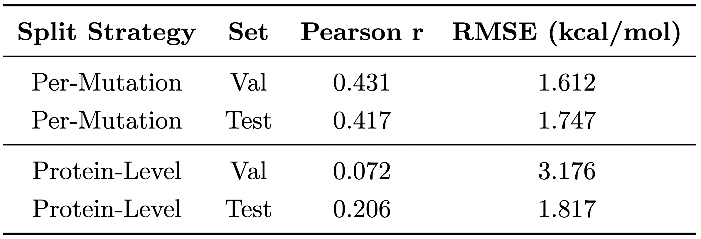
Under protein-level splitting, validation RMSE plateaued immediately near 3.2 kcal/mol while training RMSE continued to fall, with early stopping triggering at round 13 (Fig. 4). The model had nothing transferable to offer unseen proteins. Test performance dropped to r=0.206 (Table 2). We realized that this was not a tuning failure, but reflected the biological problem we were exploring. Physicochemical features encode what changed in a substitution but carry no information about where the mutation sits within the folded structure, which contacts it disrupts, or how its effects propagate through the surrounding residue network. No hyperparameter adjustment would be able to provide information that the features do not contain. Notably, protein-level validation performance (r=0.072) fell below test performance (r=0.206), which was an artifact of the small dataset. With only 46 proteins, both the validation and test sets contained roughly 9 proteins each, which made estimates highly sensitive to which proteins are assigned to each split by chance. This motivated our expansion to the larger dataset for our GNN model implementation.
The gap between per-mutation (r=0.417) and protein-level (r=0.206) performance was the central finding of our baseline. Knowing which amino acid was substituted isn’t enough; the model also needs to know where the mutation sits within the protein’s contact network and what it disrupts structurally.
GNNs

The model processes a pair of input graphs (one for the wild-type amino acid sequence and one with the mutation applied) through a shared GINEConv encoder implemented in PyTorch Geometric. GINEConv is a message-passing architecture that is edge-aware: at each layer, every residue updates its representation by aggregating information from its spatial neighbors, weighted by the properties of the connecting edges. After two rounds of message-passing, the embedding at the mutation site is extracted from each graph. This is not a global average, but the specific node that changed. Their difference, ΔZ = zWT − zMUT, is passed to a two-layer MLP to predict ΔΔG (Fig. 5). If a mutation’s thermodynamic effect depends on its structural neighborhood, then we thought that the difference between how that neighborhood looks before and after the swap should carry the predictive signal. The model is trained end-to-end by minimizing mean squared error between predicted and experimentally measured ΔΔG values. As we discuss later, this choice likely contributes to the prediction shrinkage we observe.
The model processes a pair of input graphs, one for the wild-type amino acid sequence and one with the mutation applied, through a shared GINEConv encoder implemented in PyTorch Geometric. GINEConv is a message-passing architecture that is edge-aware: at each layer, every residue updates its representation by aggregating information from its spatial neighbors, weighted by the properties of the connecting edges. After two rounds of message-passing, the embedding at the mutation site is extracted from each graph. This is not a global average, but the specific node that changed. Their difference, ΔZ = zWT − zMUT, is passed to a two-layer MLP to regress ΔΔG (Fig. 5). If a mutation’s thermodynamic effect depends on its structural neighborhood, then we expected the difference between how that neighborhood looks before and after the swap to carry the predictive signal.
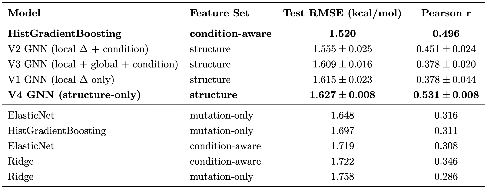
We designed four GNN variants, each adding exactly one source of information so that the results isolate how different questions interact with our core GNN architecture (Table 3).
- V1 uses only the mutation-site Δ embedding, the bare structural signal from the contact graph, with no additional inputs. This was our baseline question: does graph topology alone carry predictive value before anything else is added?
- V2 adds experimental condition features, specifically pH and temperature, directly to the MLP head. Previous literature has shown that the same mutation measured at different pH or temperature conditions can yield meaningfully different ΔΔG values, and ProTherm aggregates measurements across many experimental settings (Pancotti et al., 2022). This ablation tests whether knowing the biochemical conditions under which ΔΔG was measured improves predictions on top of the graph signal.
- V3 further adds a global mean-pooled embedding of the entire graph alongside the local mutation-site Δ, asking whether the whole-protein context beyond the immediate structural neighborhood carries additional signal.
-
V4 takes the opposite approach and is trained exclusively on structure-backed examples with no
condition features at all. This is the cleanest test of what pure structural signal can achieve, and is free
from experimental metadata or fallback graph noise.
- V2 asks if conditions help on top of structure, and V4 asks if structure alone is sufficient when the graph quality is guaranteed.
Each ablation to the GNN was performed sequentially. We found that adding a global mean-pooled embedding of the entire protein to V2, resulting in the V3 GNN, hurt performance on both metrics (r drops from 0.436 to 0.401, RMSE rises from 1.572 to 1.591; Table 3). Mean pooling averages representations across every residue in the protein, the vast majority of which are spatially unrelated to the mutation site. On a strict protein-group split, this global signal encodes protein-specific structure that doesn’t transfer to unseen proteins, while simultaneously diluting the local mutation-site Δ that carries the actual predictive information. This negative finding about aggregation strategy showed that for ΔΔG prediction, whole-protein context was harmful. The best readout is the one closest to where the mutation actually occurred (a conclusion reinforced by the burial stratification results we discuss below).
Alongside the GNN variants we trained tabular baselines (Ridge, ElasticNet, and HistGradientBoosting) on the same split, each in two modes: mutation-only and condition-aware, adding experimental pH and temperature. The condition-aware mode probes how much variance in ProTherm is explained by measurement setting rather than molecular mechanism. This is a meaningful distinction given that the database aggregates stability measurements from many independent laboratories, each with different experimental protocols, meaning pH and temperature are not uniform across entries. HistGradientBoosting's condition-aware variant ultimately achieved the lowest RMSE of any model, directly complicating our original hypothesis and motivating the burial-stratified analysis that follows.
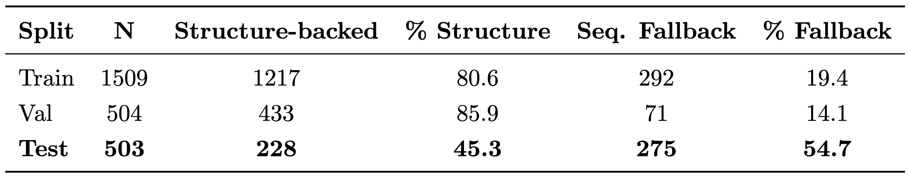
The structural coverage asymmetry shown in Table 4 directly constrains how V1-V3 should be interpreted. Strict protein-group holdout means that the test set inherits whatever structural data gaps exist for those proteins, which is an honest reflection of what large-scale deployment would face. A GNN trained predominantly on true spatial contacts but evaluated predominantly on sequence-order proxies cannot demonstrate its full capability.
We designed V4 to address this directly, restricting splits to proteins with confirmed PDB or AlphaFold structures so that every graph edge reflects a real spatial contact. This is the cleanest test of what the GNN achieves when complete structural information is available.
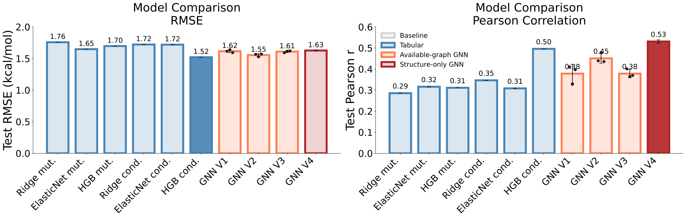
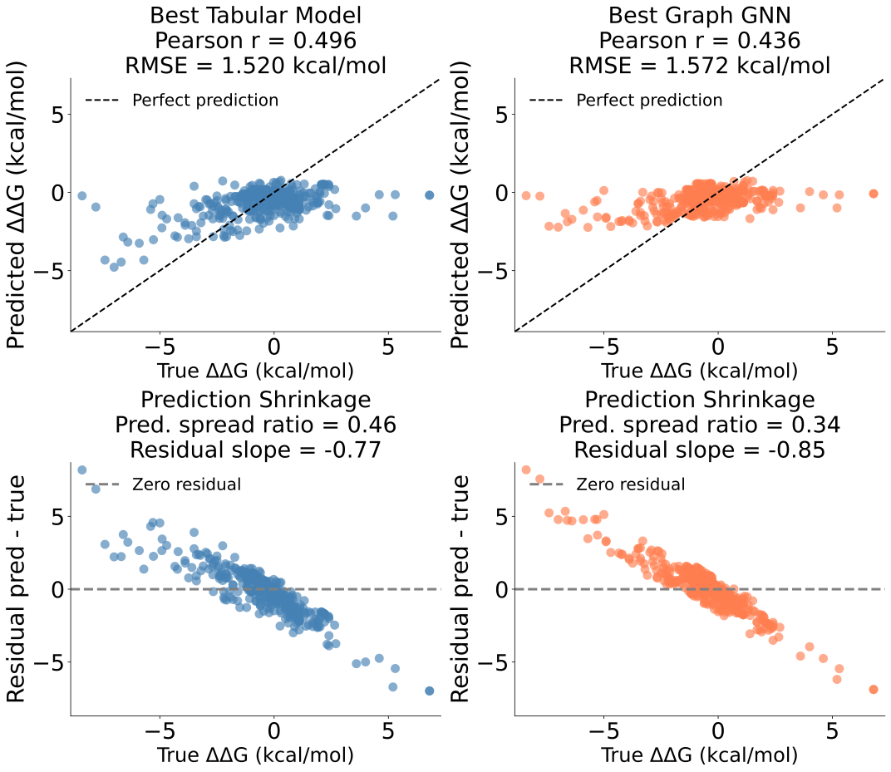
The condition-aware HistGradientBoosting model achieves the lowest test RMSE (1.520 kcal/mol), while V4 achieves the highest Pearson r (0.531; Fig. 6). These are different models, and the divergence reflects a systematic difference in prediction behavior visible in Fig. 7: the GNN’s predictions are compressed toward the mean, covering only a third of the true ΔΔG range (spread ratio 0.34 vs. 0.46 for the tabular model), with a steeper negative residual slope (-0.85 vs. -0.77). This is a consequence of MSE training: by penalizing large errors quadratically, the loss rewards conservative predictions, preserving rank order and Pearson r while inflating absolute error on extreme mutations.
Adding experimental conditions to the tabular model lifted Pearson r from 0.311 to 0.496, a larger gain than any architectural change we made to the GNN. In ProTherm, knowing the pH and temperature at which a mutation was measured explains more variance than the spatial contact network does. This isn’t because structure is uninformative, but because condition heterogeneity dominates this specific dataset. The GNN’s structural advantage only becomes unambiguous once we control for it, which is what the burial-stratified analysis below shows.
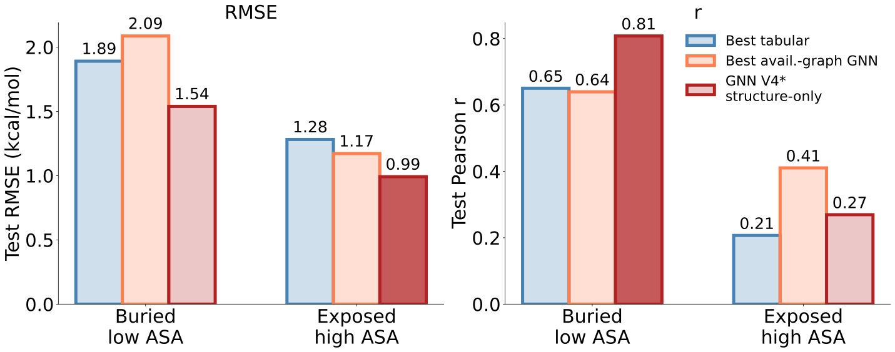
Stratifying the test set by residue burial reveals the most direct test of our hypothesis (Fig. 8). On buried residues, where mutations sit within dense contact networks and structural effects propagate through many spatial neighbors, the GNN (V4) achieves Pearson r=0.81 compared to r=0.65 for the best tabular model and r=0.64 for the best full-dataset GNN (V2). On exposed residues, where contact networks are sparser, this reverses: the tabular model recovers its advantage (r=0.41 vs. r=0.27 for GNN), and experimental conditions dominate the variance.
This crossover confirms that the GNN’s advantage is conditional on structural density. Message-passing captures meaningful signal precisely where the contact network is dense enough to encode non-local mutational effects. Where it is not, sequence features and experimental conditions are sufficiently informative.
Discussion
Our results refine the original hypothesis rather than overturn it. Across the full test set, the GNN did not outperform the strongest tabular baseline, but its best-performing cases aligned closely with the scenarios where structural context should matter most. The condition-aware HistGradientBoosting model achieved the lowest RMSE, highlighting how strongly pH and temperature influence variation within ProTherm. This is important because ProTherm is not a single standardized experiment; it aggregates measurements collected across different proteins, laboratories, and experimental conditions. As a result, part of the prediction task involves learning experimental context in addition to protein structure. In that setting, a tabular model with explicit condition features has a clear advantage.
The main limitation of the GNN was not an absence of structural learning, but the inconsistency of the structural signal available across the dataset. Many test examples relied on sequence-neighborhood fallback graphs, where edges reflected chain adjacency rather than genuine 3D residue contacts. This mismatch in graph quality complicated interpretation of the full-dataset GNN results and likely contributed to the models failing to consistently outperform the condition-aware tabular baseline.
The strongest evidence for the value of the GNN came from the structure-only and burial-stratified analyses. V4, which was trained exclusively on examples with real structural graphs, produced the best GNN performance overall. On buried residues, V4 achieved a Pearson correlation of r = 0.81, compared with r = 0.65 for the best tabular model. This aligns with the biological motivation behind the project: buried mutations exist within dense structural contact networks, so their effects are often influenced by nearby residues in 3D space, including residues that may be distant in primary sequence. A graph model can explicitly capture those relationships. In contrast, the advantage disappeared for exposed residues, where the tabular model performed better. Exposed sites generally have sparser contact neighborhoods, reducing the amount of structural information available for the GNN to exploit.
Ethics
The biggest ethical concern is that a model like this could be mistaken for a reliable biological decision tool when it is really a limited predictor trained on uneven experimental data. A wrong ΔΔG estimate could matter if someone used it to judge whether a mutation is harmless, disease-related, or worth testing in a lab. Our model is especially risky for that because it tends to soften extreme predictions, which could make strongly destabilizing mutations look less serious than they are. The model is also better supported for proteins and mutation types that are well represented in existing databases, while less-studied proteins may get weaker predictions without that uncertainty being obvious.
Next Steps
With three more months, the main goal would be to move this project from a working modeling pipeline to something cleaner, more usable, and more biologically interpretable. Our current results show that structural information can improve ΔΔG prediction, especially for buried residues where local contacts matter most. However, the project is still limited by how difficult it is to run the model on new mutations, how much curated data is available, and how much of the structural visualization is based on wild-type rather than mutant protein structures.
First, we would make the model easier for other people to implement. Right now, the pipeline works for our curated dataset, but it is not yet something a user could easily apply to a new protein. A major next step would be building an interactive interface where a user could enter a wild-type amino acid, choose a mutation, and receive the predicted ΔΔG. This would make the model more useful beyond our benchmark because it would allow someone to test a mutation directly instead of only reading aggregate model results. Ideally, the interface would also allow optional inputs like pH and temperature, since our results showed that experimental conditions explain a meaningful amount of variation in ProTherm.
Second, we would continue expanding the dataset. This is a common limitation in machine learning projects, but it is especially important here because protein stability data is sparse, uneven, and experimentally heterogeneous. More mutation-stability measurements would help the model learn from a wider range of proteins, mutation types, and ΔΔG values. It would also help address one of our most problematic model behaviors: prediction shrinkage toward the mean. With more examples of strongly stabilizing and strongly destabilizing mutations, the model would have a better chance of learning extreme effects instead of predicting values that are too conservative.
Third, we would improve the protein visualization component through AlphaFold or ColabFold. In the current version, visualization is mostly based on structures we already have, and in many cases those structures represent only the wild-type protein. This means we can show where a mutation occurs, but we cannot fully show how that mutation changes the folded structure. There are select cases where we, luckily, have both wild-type and mutant protein structures, which allows us to visualize both wild-type and mutant structures without needing to generate the mutant structures ourselves. With more time, however, we strive to generate predicted mutant structures, possibly through ColabFold or another program, and display them alongside the wild-type structure. This would let users compare the two directly and see whether the mutation appears to change local contacts, residue packing, or overall folding. Even if these predicted structures would still need to be interpreted cautiously, they would make the project much more connected to the biological question we are asking.
Finally, we would make the entire model pipeline cleaner and more reproducible. Our project combined data cleaning, structure lookup, graph construction, model training, evaluation, and visualization. Each part worked, but the full pipeline could be made easier to run and easier to modify. With more time, we would organize the code so that a user could move from mutation input to structure retrieval to ΔΔG prediction in a more direct way. This would also make future improvements easier, whether that means adding more data, changing the graph construction strategy, or testing new model architectures.
Overall, the next phase would focus on turning this project into a more practical tool. The model would not just evaluate mutations from an existing dataset; it would let users input new mutations, generate predicted stability changes, visualize wild-type and mutant structures, and run the full pipeline in a cleaner and more reproducible way. In brief, the long-term goal would be to turn this project into an accessible and reproducible program for predicting how mutations affect protein stability.
References
Ahmad, S., Jose da Costa Gonzales, L., Bowler-Barnett, E. H., Rice, D. L., Kim, M., Wijerathne, S., Luciani, A., Kandasaamy, S., Luo, J., Watkins, X., Turner, E., Martin, M. J., & UniProt Consortium. (2025). The UniProt website API: facilitating programmatic access to protein knowledge. Nucleic Acids Research, 53(W1), W547–W553. https://doi.org/10.1093/nar/gkaf394
Blaabjerg, L. M., Kassem, M. M., Good, L. L., Jonsson, N., Cagiada, M., Johansson, K. E., Boomsma, W., Stein, A., & Lindorff-Larsen, K. (2023). Rapid protein stability prediction using deep learning representations. eLife, 12, e82593. https://doi.org/10.7554/eLife.82593
Cao, H., Wang, J., He, L., Qi, Y., & Zhang, J. Z. (2019). DeepDDG: Predicting the stability change of protein point mutations using neural networks. Journal of Chemical Information and Modeling, 59(4), 1508–1514. https://doi.org/10.1021/acs.jcim.8b00697
Diaz, D. J., Gong, C., Ouyang-Zhang, J., et al. (2024). Stability Oracle: A structure-based graph-transformer framework for identifying stabilizing mutations. Nature Communications, 15, 6170. https://doi.org/10.1038/s41467-024-49780-2
Dobson, C. M. (2003). Protein folding and misfolding. Nature, 426, 884–890. https://www.nature.com/articles/nature02261
Hartl, F. U., & Hayer-Hartl, M. (2009). Converging concepts of protein folding in vitro and in vivo. Nature Structural & Molecular Biology, 16, 574–578. https://www.nature.com/articles/nsmb.1591
Henikoff, S., & Henikoff, J. G. (1992). Amino acid substitution matrices from protein blocks. Proceedings of the National Academy of Sciences, 89, 10915–10919. https://compbio.berkeley.edu/class/c246/Reading/henikoff-1992-pnas.pdf
Jumper, J., Evans, R., Pritzel, A., et al. (2021). Highly accurate protein structure prediction with AlphaFold. Nature, 596, 583–589. https://doi.org/10.1038/s41586-021-03819-2
Montanucci, L., Martelli, P. L., Ben-Tal, N., & Fariselli, P. (2019). A natural upper bound to the accuracy of predicting protein stability changes upon mutations. Bioinformatics, 35(9), 1513–1517. https://doi.org/10.1093/bioinformatics/bty880
Nikam, R., Kulandaisamy, A., Harini, K., Sharma, D., & Gromiha, M. M. (2020). ProThermDB: Thermodynamic database for proteins and mutants revisited after 15 years. Nucleic Acids Research, 49(D1). https://academic.oup.com/nar/article/49/D1/D420/5983626
Nisthal, A., Wang, C. Y., Ary, M. L., & Mayo, S. L. (2019). Protein stability engineering insights revealed by domain-wide comprehensive mutagenesis. Proceedings of the National Academy of Sciences. https://doi.org/10.1073/pnas.1903888116
Pancotti, C., Benevenuta, S., Birolo, G., Alberini, V., Repetto, V., Sanavia, T., Capriotti, E., & Fariselli, P. (2022). Predicting protein stability changes upon single-point mutation: A thorough comparison of the available tools on a new dataset. Briefings in Bioinformatics, 23(2). https://doi.org/10.1093/bib/bbab555
Pauling, L., & Itano, H. A. (1949). Sickle cell anemia, a molecular disease. Science, 110(2865), 543–548. https://pubmed.ncbi.nlm.nih.gov/15395398/